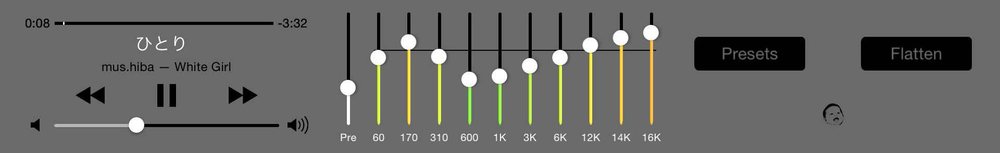
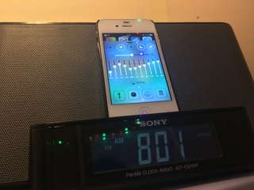
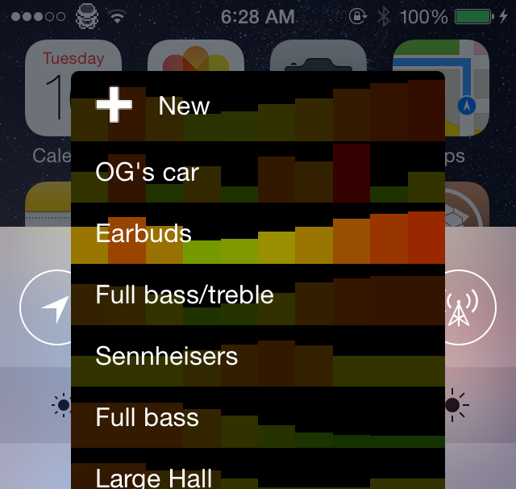
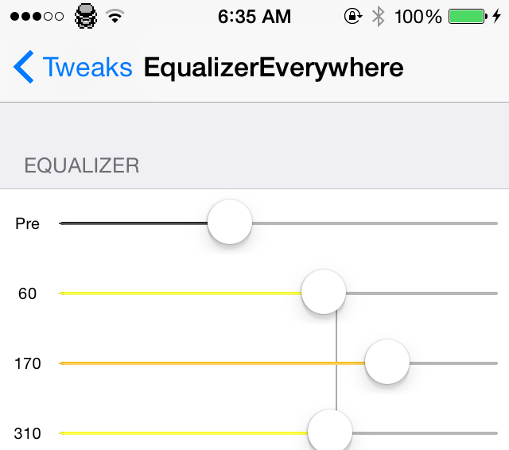

KEEP IN MIND:
THIS IS
BETA
software! These usually are unstable. Only update if the contents of the changelog appeals to you!
Changelog
This tweak will make your audio sound better to suit your speakers/headphones. Change the sliders to modify bass, treble or mids.
It applies the equalization to your speaker output via Core Audio. So it works with every app.
It works with every type of Apple supported audio output (i.e. the earpiece, earbuds, AUX, bluetooth, dock speakers, and AirPlay).

It includes a preamp and it has 10 frequency bands: 60, 170, 310, 600, 1K, 3K, 6K, 12K, 14K and 16K Hz. It ranges from -12 to +12 dB.
You can also save and set presets if you have multiple types of speakers/headphones.

It is also availble in settings if you don't like it in the Control Center.
